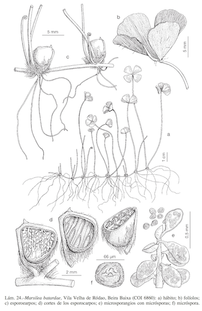
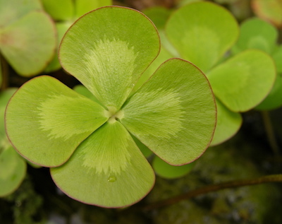
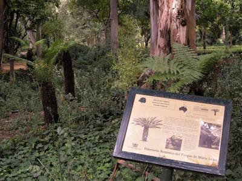
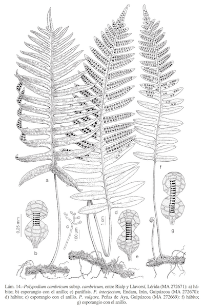

Tema 8.- Clase Polypodiopsida 3: helechos
leptosporangiados
| Carlos Romero Zarco, Universidad de Sevilla |
| Orden Salviniales |
|||||||
 Marsilea spp., tréboles
acuáticos de 4 hojas.
Lámina de Flora iberica |
 |
||||||
| Orden Cyatheales |
|||||||
|
 Dicksonia anctartica en el
parque de
María Luisa (Sevilla), años 90. Foto: Jacinto Martínez Gal. Obsequio del Pabellón de Nueva Zelanda
para la Expo'92. Murieron todas "achicharraítas" |
||||||
| Orden Polypodiales |
|||||||||
 Polypodium cambricum. Lámina de Flora Iberica |
|
||||||||
| Ejemplos importantes en nuestra flora | |||||||||
|
|||||||||
| Resumen |
|